Gemma Team，Google DeepMind1
2026-06-19 · arXiv:2607.02770v2（2026-07-24）
我们介绍 Gemma 4，这是 Gemma 模型家族中新一代开放权重、原生多模态语言模型。Gemma 4 模型套件旨在提升计算效率和推理能力，包含稠密架构与 MoE 架构，参数规模从 2.3B 到 31B。除了为各规模模型改进视觉和音频编码器外，我们还为 12B 模型提出统一的无编码器架构，直接接收原始音频和图像块。此外，我们引入思考模式，使 Gemma 模型能够在回答之前生成推理轨迹。通过关键设计选择，我们提升了推理速度、内存效率、计算效率以及长上下文能力。Gemma 4 在 STEM、多模态和长上下文基准上实现了性能跃升，并在人类评分任务上媲美规模更大的前沿开放模型。
LLM 的快速发展推动了对开放权重模型的需求，这些模型需要具备强大的多模态理解、推理和计算效率。基于前代模型的基础（Gemma Team, 2024a,b, 2025a），我们推出 Gemma 4，这是 Gemma 模型家族迄今能力最强、效率最高的一代。Gemma 4 提供原生多模态架构，能够无缝处理文本、图像和音频，同时在高度复杂的推理任务上达到前沿水平。Gemma 4 家族面向多种端侧硬件构建。模型套件包含稠密架构（参数量为 2.3B、4.5B、12B 和 31B），以及一个激活参数为 3.8B、总参数为 26B 的 MoE（Jacobs et al.，1991）变体。我们引入了若干架构与方法创新：
本技术报告概述不同规模模型的架构，以及 Gemma 4 的预训练与后训练方案。通过全面的基准测试和 Arena（Chiang et al., 2024）等人工评估，我们证明 Gemma 4 在文本、图像和音频模态上的表现可与规模更大的前沿开源模型相媲美。我们以 Apache 2.0 许可证发布 Gemma 4 模型，使各地的开发者和研究人员能够在这些能力的基础上进行构建、定制和扩展。
1完整作者名单见贡献与致谢部分。通信请发送至 gemma4report@gmail.com。
© 2026 Google DeepMind。保留所有权利。
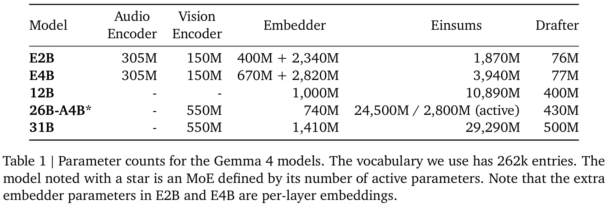
Gemma 4 模型采用仅解码器的 Transformer 架构（Vaswani et al., 2017）。模型使用 RMSNorm（Zhang and Sennrich, 2019）进行前置归一化和后置归一化，并采用 QKNorm（Henry et al., 2020）。
稠密模型与 MoE：Gemma 4 模型家族包含有效参数为 2.3B（E2B）、有效参数为 4.5B（E4B）、12B 和 31B 的稠密架构，以及一个激活参数为 3.8B、总参数为 26B 的 MoE 模型（26B-A4B）。E2B 和 E4B 与 Gemma 3n（Gemma Team, 2025b）一样使用逐层 embedding，因此其总参数分别为 5B 和 8B，而有效参数分别为 2.3B 和 4.5B。
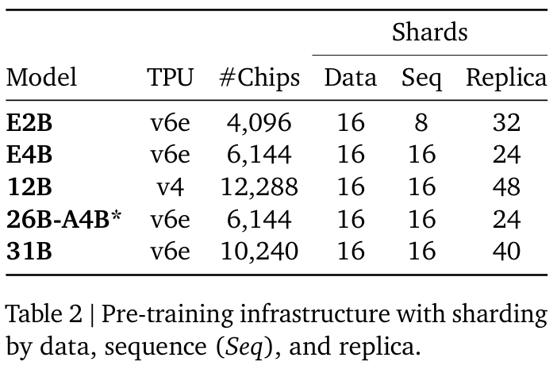
长上下文效率：我们的局部与全局 attention 比例模式遵循 Gemma Team（2025a）：E2B 使用 4:1 的局部 attention 块比例，其余模型使用 5:1。我们通过在全局 attention 层中将键复用为值来提升内存效率（E2B 和 E4B 除外），即 values = keys。全局 attention 层采用 \(p = 0.25\) 的 \(p\)-RoPE 进行位置编码，局部 attention 层采用 RoPE，从而有效地将全局 KV cache 减少 37.5%。全局与局部 attention 层的 RoPE 频率分别设为 1M 和 10k。最后，我们对 E2B 和 E4B 模型分别按 20/35 和 18/42 的比例共享 KV cache。
E2B 和 E4B Gemma 模型配备 150M 的视觉编码器，更大的模型使用 550M 编码器（统一架构的 12B 除外）。两者均为图像块大小为 16 的 Vision Transformer（Dosovitskiy et al., 2021, ViT），架构差异详见附录表 10。视觉编码器支持可变宽高比（见图 2 和算法 1），并同时使用带非因果 attention 的轴向 2D-RoPE（Heo et al., 2024）和二维绝对位置 embedding。我们将最大 token 数 \(N_{max}\) 限制为 70、140、280、560 和 1120（实现细节见算法 1）。
E2B 和 E4B Gemma 模型使用 305M 的音频编码器，以 Mel 滤波器组作为输入，按 40ms 片段处理音频。编码器架构基于 Universal Speech Model（Zhang et al., 2023, USM），包含两个下采样卷积层，随后是十二个 Conformer 层（Gulati et al., 2020）。虽然架构与 Gemma 3n 类似，但我们将参数量降低了 55%（从 680M 降至 305M）。我们不使用向量量化；LLM 接收的是……
（音频编码器输出的描述续见原文第 3 页。）
（接原文第 2 页）……音频编码器产生的连续表示。与视觉编码器一样，我们在预训练期间保持其权重冻结。
Gemma 4 12B 基于一种新的、统一的无编码器模型范式从零开始训练，以轻量投影模块替代独立的视觉和音频编码器。对于视觉模态，Gemma 4 12B 接收 48×48×3 的 RGB 图像块，但用一次大型矩阵乘法（35M 参数）替代 550M 的视觉编码器。在最终的 LayerNorm 层（Ba et al., 2016）之前，直接向图像块表示添加基于二维坐标的位置 embedding，以维持空间感知能力。
对于音频，完全移除基于 USM 的 305M Conformer 编码器。以 16kHz 采样率将原始音频划分为 40ms 片段，每个片段形成一个 640 维向量。这些向量直接投影到 LLM embedding 空间。由于音频本身是时间序列，不需要额外的位置编码。
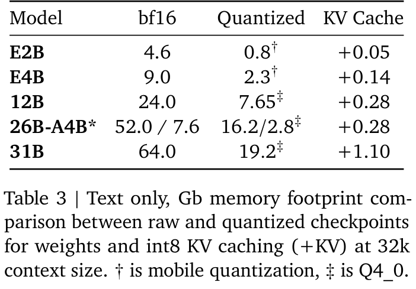
我们采用与 Gemma 3 类似的预训练方式。
训练数据。预训练数据集是来自广泛领域与模态的大规模、多样化数据集合，包括网页文档、代码、图像和音频（用于 E2B、E4B 和 12B），数据截止日期为 2025 年 1 月。
tokenizer。我们使用与 Gemini Team（2025）相同的 tokenizer，即 SentencePiece tokenizer（Kudo and Richardson, 2018），具有数字拆分、空白保留以及字节级编码特性。词表包含 262k 个条目。
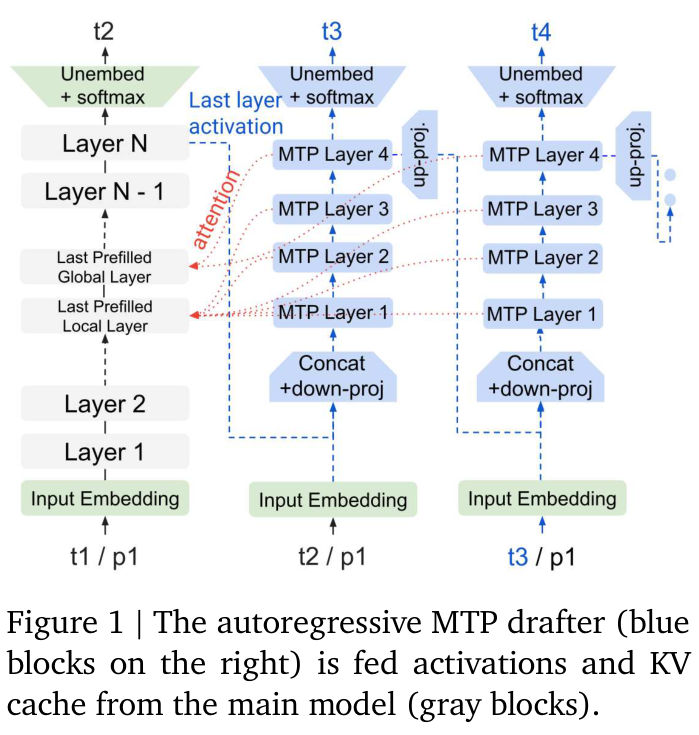
过滤。我们过滤数据以消除基准污染，并降低产生不期望或不安全话语的风险以及复述训练数据的风险。
我们在原始 checkpoint 之外，还提供不同格式的量化模型和编码器。基于最常用的开源量化推理引擎（例如 llama.cpp）以及高效硬件支持，我们重点采用两类权重表示：
表 3 报告了原始模型与量化模型在 32k token 序列下，带 KV cache 和不带 KV cache 时的内存占用。此外，为了使 fp16 推理保持稳定，我们在每个块中引入一个标量缩放因子，将激活范围限制在 fp16 可表示的范围内。
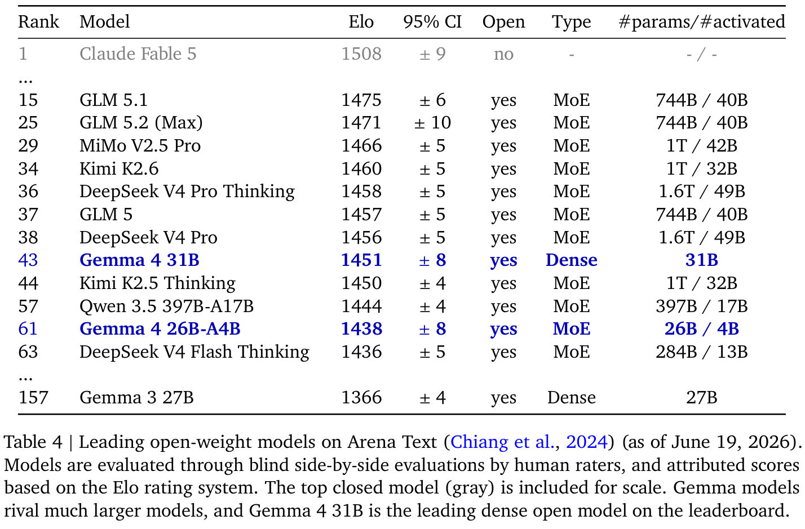
我们也对图像与音频编码器应用 QAT。对于 150M 图像编码器，将激活和权重量化为 8 位精度（W8A8），使整个前向传播的内存占用减少到原来的二分之一（从 400 MB 降至 200 MB，包含端侧编译开销），并在较新的硬件上将端侧延迟相对于 Gemma 3n 降低 44%。对于音频编码器，我们进一步将激活精度降低为 8 位，并按层簇将权重精度设为 {2, 4, 8} 位。总体而言，磁盘占用降低了 78%，从 Gemma 3n 的 390 MB 降至本版本的 87 MB。
我们随模型一起训练一个小型自回归 MTP 草稿头，用于 speculative decoding。在我们的 MTP 流程中，将前一步模型最后一层的激活以及 token embedding 输入 MTP 头。MTP 头使用独立的 embedding 器和一个由 4 层组成的 Transformer 块，按顺序生成未来 token；该 Transformer 块对主模型的 KV 执行交叉 attention（图 1），因此无需进行 MTP prefill，并支持任意草稿长度。Transformer 块的模型维度对于 E2B 和 E4B 为 256，对于 26B-A4B 和 31B 为 1024，包含三个局部 attention 层和一个全局 attention 层。
高效 MTP decoding。对于 E2B 和 E4B 草稿模型，我们用对 token 簇执行 top-k 操作来替代投影到整个词表的操作，从而减少 decoding 开销。因此，最终矩阵乘法从 \(d\)×262,000 缩减为 \(d\)×4096，同时保持类似的接受率。
如表 2 所示，我们使用 TPUv4 和 TPUv6e 训练模型。每种模型配置都经过优化，以尽量缩短训练步耗时。对于较大的模型，我们使用切片粒度弹性（Slice-Granularity Elasticity；Gemini Team, 2025），在发生局部故障时，能够以更少的 TPU 芯片“切片”持续训练。这种重新配置将中断造成的延迟从许多分钟缩短为几秒钟。
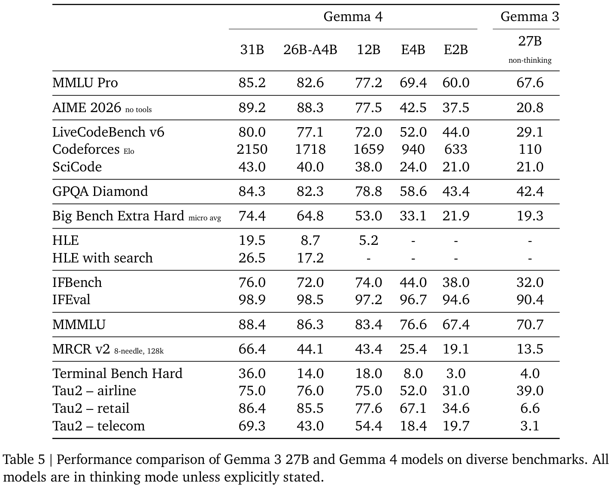
优化器状态使用 ZeRO-3 的一种实现（Ren et al., 2021）进行分片。对于多 pod 训练，我们采用 Barham et al.（2022）的 Pathways 方法，通过数据中心网络执行数据副本归约。我们使用 JAX（Roberts et al., 2023）和 Pathways 的单控制器编程范式，并结合 GSPMD 分区器（Xu et al., 2021）以及 MegaScale XLA 编译器（XLA, 2019）。
我们采用与 Gemma 3 类似的后训练方式，将预训练模型转化为指令微调模型。一个显著区别是加入思考模式，使模型能够在回答前输出推理轨迹。
数据过滤。我们仔细优化后训练使用的数据，以最大化模型性能。我们过滤包含某些个人信息、不安全或有毒模型输出、错误自我身份识别数据以及重复样例的示例。加入鼓励更好的上下文内归因、保留性表达和拒绝回答以尽量减少幻觉的数据子集，也能改善事实性指标上的表现，同时不会降低模型在其他指标上的性能。
PT 与 IT 格式。所有模型共享同一个 tokenizer，其中一些控制 token 专门用于 IT 格式。关键区别是，PT 模型在生成结束时输出 <eos> token，而 IT 模型在生成结束时输出 <turn|>。表 11 给出了 IT 示例。因此，无论微调哪种模型，都需要添加各自的结束 token。表 11 详细说明如何启用思考模式，以及模型如何处理函数调用。
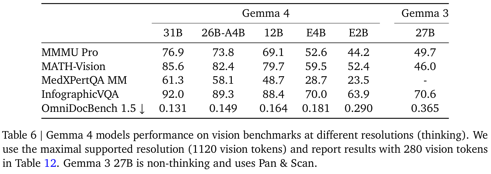
本节使用涵盖不同领域的一系列自动化基准和人工评估，以及 MMLU Pro 等静态基准，评估 IT 模型。
我们报告了 31B 和 26B-A4B 模型在 Arena（Chiang et al., 2024）上的表现，由人工评分者通过盲测并排比较，将其与其他最先进模型进行评估。Elo 分数见表 4。Gemma 4 31B 是稠密类别中排名最高的开放模型，Gemma 4 31B 和 26B-A4B 均展现出与规模大得多的开放模型相当的性能。
表 5 展示了最终模型在多种基准上相对于 Gemma 3 27B 的性能。Gemma 4 31B 的规模与之最接近，并且在各项指标上均明显更好；E2B 则以约十分之一的参数量，大致达到 Gemma 3 27B 的性能。表 6 展示了 Gemma 4 模型在视觉基准上的表现，E4B 在所有评估中均与 Gemma 3 27B 持平或优于后者。表 7 和表 8 分别展示 E2B 与 E4B，以及 12B 的多语言音频转写和翻译性能。表 9 显示了从 Gemma 3 27B 到 Gemma 4 模型的长上下文能力跃升，其中 E4B 优于 Gemma 3 27B。
随着开放模型成为企业基础设施的核心，来源可追溯性与安全保障至关重要。Gemma 4 接受与 Gemini 模型同样严格的安全评估。责任、安全与安保在开发流程中具有最高的重要性，确保这些语言模型从设计之初就服务于负责任的 AI 开发。
我们评估 Gemma 4 收益与风险的方法，沿用前代模型建立的基础，并根据其扩展的多模态能力进行更新。我们仍然相信，AI 的开放性能够使这些技术的收益惠及整个社会，但必须持续将这种收益与可能造成个人和机构伤害的恶意使用风险进行权衡（Weidinger et al., 2021）。
Gemma 4 模型与内部安全及负责任 AI 团队合作开发。发布这些模型需要仔细审视与 LLM 相关的不断演变的风险，并理解模型在真实环境中如何部署。虽然开放模型能够在整个 AI 生态系统中共享创新成果，但我们仍致力于向用户提供教育资源，并监测下游模型的使用。
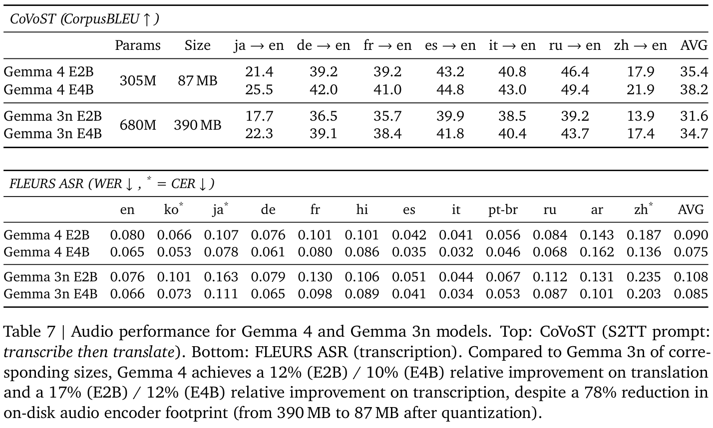
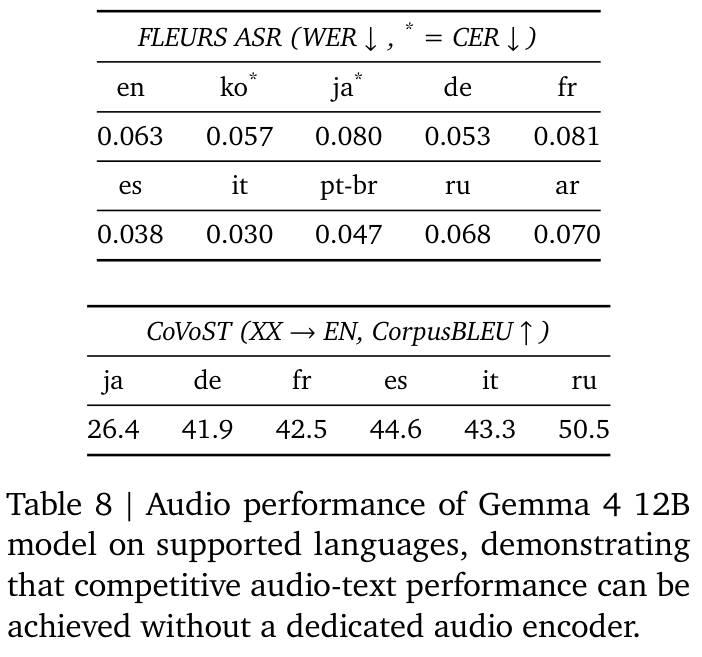
Gemma 安全方法的一个关键支柱，是使微调模型与 Google 的 AI 原则和安全政策保持一致。这些政策旨在防止生成式模型产生有害内容，具体包括：
为缓解这些风险，Gemma 4 模型的输入数据经过仔细的预处理与审查。训练数据经过专门过滤，移除某些个人信息和其他敏感数据，以防止侵犯隐私。我们还实施了后训练评估和训练阶段缓解措施，使模型与安全政策保持一致。
我们进行严格的自动化与人工评估，以了解模型可能造成的潜在伤害。在所有安全测试领域中，相对于前代 Gemma 模型，我们观察到内容安全各类别均有显著改善。总体而言，Gemma 4 模型显著……
（安全评估结论续见原文第 8 页。）
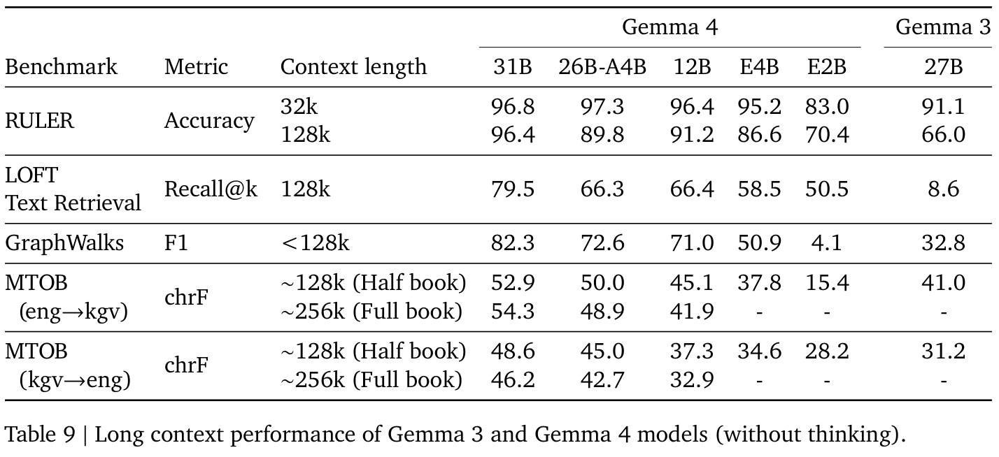
（接原文第 7 页）……优于 Gemma 3 和 3n 模型，在提升安全性的同时保持较低的无正当理由拒绝率。
重要的是，所有测试均在不使用安全过滤器的情况下进行，以准确评估模型自身的能力和行为。对于文本到文本和图像到文本两种模态，以及所有模型规模，模型产生的政策违规都很少。我们在开发速度与有针对性的安全测试之间取得平衡，遵守《前沿安全框架》（Google DeepMind, 2024）中列出的承诺。
LLM 的开发带来特定的伦理考量。在构建 Gemma 4 时，我们重点关注：
设计安全、可靠且负责任的应用，需要采用系统层面的方法，缓解与具体使用场景和环境相关的风险。我们提供内容安全指南、机制与防护措施，并鼓励开发者根据产品政策实施适当配置。我们将继续采用与潜在风险相称的安全缓解措施，只有在确信收益显著超过可预见风险时，才会与社区共享这些模型。
本技术报告介绍了 Gemma 4，一个开放权重模型家族，包含面向不同硬件环境设计的多模态稠密架构与 MoE 架构。Gemma 4 模型配备思考模式，在回答前生成推理轨迹，从而提升整体性能。我们引入了统一的无编码器架构，用于处理……
（结论续见原文第 9 页。）
（接原文第 8 页）……原始音频与图像块。我们还通过更好的局部与全局 attention 比例、位置编码以及 KV cache 共享，缓解了长上下文的内存限制。我们通过 QAT 提升整体计算效率，并通过 MTP 草稿模型提升内存效率。Gemma 4 模型在各项基准上相对于 Gemma 3 展现出性能跃升，人工评估表明，Gemma 4 的表现与规模显著更大的开放模型相当，为边缘部署和推理提供了可扩展的基础，同时支持开放研究。
中文标题附于完整原文书目信息之前；作者、出版信息与标识符保留原文。
中文标题：层归一化
J. L. Ba, J. R. Kiros, and G. E. Hinton. Layer normalization. arXiv preprint arXiv:1607.06450, 2016.
中文标题：转啊转！是什么让 RoPE 有用？
F. Barbero, A. Vitvitskyi, C. Perivolaropoulos, R. Pascanu, and P. Veličković. Round and round we go! what makes rotary positional encodings useful? In The Thirteenth International Conference on Learning Representations, 2025.
中文标题：Pathways：用于机器学习的异步分布式数据流
P. Barham, A. Chowdhery, J. Dean, S. Ghemawat, S. Hand, D. Hurt, M. Isard, H. Lim, R. Pang, S. Roy, B. Saeta, P. Schuh, R. Sepassi, L. E. Shafey, C. A. Thekkath, and Y. Wu. Pathways: Asynchronous distributed dataflow for ml, 2022.
中文标题：\(\tau\)2-bench：在双重控制环境中评估对话 agent
V. Barres, H. Dong, S. Ray, X. Si, and K. Narasimhan. 𝜏2-bench: Evaluating conversational agents in a dual-control environment, 2025.
中文标题：Chatbot Arena：通过人类偏好评估 LLM 的开放平台
W.-L. Chiang, L. Zheng, Y. Sheng, A. N. Angelopoulos, T. Li, D. Li, H. Zhang, B. Zhu, M. Jordan, J. E. Gonzalez, and I. Stoica. Chatbot arena: An open platform for evaluating llms by human preference, 2024.
中文标题：FLEURS：通用语音表示的少样本学习评估
A. Conneau, M. Ma, S. Khanuja, Y. Zhang, V. Axelrod, S. Dalmia, J. Riesa, C. Rivera, and A. Bapna. Fleurs: Few-shot learning evaluation of universal representations of speech. In 2022 IEEE Spoken Language Technology Workshop (SLT), pages 798–805. IEEE, 2023.
中文标题：一张图像相当于 16×16 个词：用于大规模图像识别的 Transformer
A. Dosovitskiy, L. Beyer, A. Kolesnikov, D. Weissenborn, X. Zhai, T. Unterthiner, M. Dehghani, M. Minderer, G. Heigold, S. Gelly, J. Uszkoreit, and N. Houlsby. An image is worth 16x16 words: Transformers for image recognition at scale. In ICLR, 2021.
中文标题：用于评估 AI 能力的专家级学术问题基准
C. for AI Safety et al. A benchmark of expert-level academic questions to assess ai capabilities. Nature, 649(8099):1139–1146, 2026.
中文标题：Gemini 2.5：以先进推理、多模态、长上下文和新一代 agent 能力推进前沿
Gemini Team. Gemini 2.5: Pushing the frontier with advanced reasoning, multimodality, long context, and next generation agentic capabilities. arXiv preprint arXiv:2507.06261, 2025.
中文标题：Gemma：基于 Gemini 研究与技术的开放模型
Gemma Team. Gemma: Open models based on gemini research and technology, 2024a.
中文标题：Gemma 2：以实用规模改进开放语言模型
Gemma Team. Gemma 2: Improving open language models at a practical size. arXiv preprint arXiv:2408.00118, 2024b.
中文标题：Gemma 3：技术报告
Gemma Team. Gemma 3: Technical report. arXiv preprint arXiv:2503.19786, 2025a.
中文标题：Gemma 3n
Gemma Team. Gemma 3n. https://deepmind.google/models/gemma/gemma-3n/, 2025b.
中文标题：介绍前沿安全框架
Google DeepMind. Introducing the frontier safety framework. https://deepmind.google/blog/introducing-the-frontier-safety-framework/, 2024.
中文标题：Conformer：用于语音识别的卷积增强 Transformer
A. Gulati, J. Qin, C.-C. Chiu, N. Parmar, Y. Zhang, J. Yu, W. Han, S. Wang, Z. Zhang, Y. Wu, et al. Conformer: Convolution-augmented transformer for speech recognition. arXiv preprint arXiv:2005.08100, 2020.
中文标题：Transformer 的 QK normalization
A. Henry, P. R. Dachapally, S. S. Pawar, and Y. Chen. Query-key normalization for transformers. In Findings of the Association for Computational Linguistics: EMNLP 2020, pages 4246–4253, 2020.
中文标题：用于 Vision Transformer 的 RoPE
B. Heo, S. Park, D. Han, and S. Yun. Rotary position embedding for vision transformer. In European Conference on Computer Vision, pages 289–305. Springer, 2024.
中文标题：RULER：你的长上下文语言模型的真实上下文长度是多少？
C.-P. Hsieh, S. Sun, S. Kriman, S. Acharya, D. Rekesh, F. Jia, Y. Zhang, and B. Ginsburg. Ruler: What’s the real context size of your …（续见原文第 10 页）
本页原文链接：https://deepmind.google/blog/introducing-the-frontier-safety-framework/ · https://deepmind.google/models/gemma/gemma-3n/
中文标题附于完整原文书目信息之前；作者、出版信息与标识符保留原文。
（接原文第 9 页 RULER 条目）long-context language models? arXiv preprint arXiv:2404.06654, 2024.
中文标题：用于高效纯整数算术推理的神经网络量化与训练
B. Jacob, S. Kligys, B. Chen, M. Zhu, M. Tang, A. Howard, H. Adam, and D. Kalenichenko. Quantization and training of neural networks for efficient integer-arithmetic-only inference. In CVPR, 2018.
中文标题：局部专家的自适应混合
R. A. Jacobs, M. I. Jordan, S. J. Nowlan, and G. E. Hinton. Adaptive mixtures of local experts. Neural Computation, 3:79–87, 1991.
中文标题：LiveCodeBench：对代码 LLM 的全面、无污染评估
N. Jain, A. Gu, W.-D. Li, F. Yan, T. Zhang, S. Wang, A. Solar-Lezama, K. Sen, and I. Stoica. Livecodebench: Holistic and contamination free evaluation of large language models for code. In International Conference on Learning Representations, volume 2025, pages 58791–58831, 2025.
中文标题：Transformer 需要三个投影吗？QKV 变体的系统研究
A. Kayyam, A. M. Gopal, and M. A. Lewis. Do transformers need three projections? systematic study of qkv variants. arXiv preprint arXiv:2606.04032, 2026.
中文标题：Big-Bench Extra Hard
M. Kazemi, B. Fatemi, H. Bansal, J. Palowitch, C. Anastasiou, S. V. Mehta, L. K. Jain, V. Aglietti, D. Jindal, P. Chen, et al. Big-bench extra hard. arXiv preprint arXiv:2502.19187, 2025.
中文标题：SentencePiece：用于神经文本处理的简洁且语言无关的子词 tokenizer 与反 tokenizer
T. Kudo and J. Richardson. SentencePiece: A simple and language independent subword tokenizer and detokenizer for neural text processing. 2018.
中文标题：长上下文语言模型能涵盖检索、RAG、SQL 等功能吗？
J. Lee, A. Chen, Z. Dai, D. Dua, D. S. Sachan, M. Boratko, Y. Luan, S. M. R. Arnold, V. Perot, S. Dalmia, H. Hu, X. Lin, P. Pasupat, A. Amini, J. R. Cole, S. Riedel, I. Naim, M.-W. Chang, and K. Guu. Can long-context language models subsume retrieval, rag, sql, and more? ArXiv, 2024.
中文标题：通过 speculative decoding 实现 Transformer 的快速推理
Y. Leviathan, M. Kalman, and Y. Matias. Fast inference from transformers via speculative decoding. In Proceedings of the 40th International Conference on Machine Learning, ICML’23. JMLR.org, 2023.
中文标题：EAGLE：推测采样需要重新思考特征不确定性
Y. Li, F. Wei, C. Zhang, and H. Zhang. EAGLE: Speculative sampling requires rethinking feature uncertainty. In International Conference on Machine Learning, 2024.
中文标题：InfographicVQA
M. Mathew, V. Bagal, R. Tito, D. Karatzas, E. Valveny, and C. Jawahar. Infographicvqa. In WACV, 2022.
中文标题：Terminal-Bench：在命令行界面中困难、真实的任务上评测 agent
M. A. Merrill, A. G. Shaw, N. Carlini, B. Li, H. Raj, I. Bercovich, L. Shi, J. Y. Shin, T. Walshe, E. K. Buchanan, et al. Terminal-bench: Benchmarking agents on hard, realistic tasks in command line interfaces. arXiv preprint arXiv:2601.11868, 2026.
中文标题：OpenAI o1 系统卡
OpenAI. Openai o1 system card. arXiv preprint arXiv:2412.16720, 2024.
中文标题：GraphWalks 数据集
OpenAI. GraphWalks dataset, 2025.
中文标题：OmniDocBench：通过全面标注评测多样化 PDF 文档解析
L. Ouyang, Y. Qu, H. Zhou, J. Zhu, R. Zhang, Q. Lin, B. Wang, Z. Zhao, M. Jiang, X. Zhao, et al. Omnidocbench: Benchmarking diverse pdf document parsing with comprehensive annotations. In Proceedings of the IEEE/CVF Conference on Computer Vision and Pattern Recognition, pages 24838–24848, 2025.
中文标题：Humanity’s Last Exam：人类最后的考试
L. Phan, A. Gatti, Z. Han, N. Li, J. Hu, H. Zhang, C. B. C. Zhang, M. Shaaban, J. Ling, S. Shi, et al. Humanity’s last exam. arXiv preprint arXiv:2501.14249, 2025.
中文标题：可验证指令遵循的泛化
V. Pyatkin, S. Malik, V. Graf, H. Ivison, S. Huang, P. Dasigi, N. Lambert, and H. Hajishirzi. Generalizing verifiable instruction following. Advances in Neural Information Processing Systems, 38, 2026.
中文标题：GPQA：研究生级、无法通过 Google 搜索轻易解决的问答基准
D. Rein, B. L. Hou, A. C. Stickland, J. Petty, R. Y. Pang, J. Dirani, J. Michael, and S. R. Bowman. Gpqa: A graduate-level google-proof q&a benchmark. ArXiv, abs/2311.12022, 2023.
中文标题：ZeRO-Offload：让十亿参数规模的模型训练普及化
J. Ren, S. Rajbhandari, R. Y. Aminabadi, O. Ruwase, S. Yang, M. Zhang, D. Li, and Y. He. Zero-offload: Democratizing billionscale model training. In USENIX, 2021.
中文标题：使用 T5X 和 SeqIO 扩展模型与数据规模
A. Roberts, H. W. Chung, G. Mishra, A. Levskaya, J. Bradbury, D. Andor, S. Narang, B. Lester, C. Gaffney, A. Mohiuddin, et al. Scaling up models and data with t5x and seqio. JMLR, 2023.
中文标题：快速 Transformer decoding：一个写入头就够了
N. Shazeer. Fast transformer decoding: One writehead is all you need. CoRR, abs/1911.02150, 2019.
中文标题附于完整原文书目信息之前；作者、出版信息与标识符保留原文。
中文标题：仅从一本语法书学习翻译新语言的基准
G. Tanzer, M. Suzgun, E. Visser, D. Jurafsky, and L. Melas-Kyriazi. A benchmark for learning to translate a new language from one grammar book. In The Twelfth International Conference on Learning Representations, 2024.
中文标题：Kimi K2.5：视觉 agent 智能
K. Team, T. Bai, Y. Bai, Y. Bao, S. Cai, Y. Cao, Y. Charles, H. Che, C. Chen, G. Chen, et al. Kimi k2.5: Visual agentic intelligence. arXiv preprint arXiv:2602.02276, 2026.
中文标题：Qwen3.5-Omni 技术报告
Q. Team. Qwen3.5-omni technical report. arXiv preprint arXiv:2604.15804, 2026.
中文标题：SciCode：由科学家策划的科研编程基准
M. Tian, L. Gao, S. D. Zhang, X. Chen, C. Fan, X. Guo, R. Haas, P. Ji, K. Krongchon, Y. Li, et al. Scicode: A research coding benchmark curated by scientists. Advances in Neural Information Processing Systems, 37:30624–30650, 2024.
中文标题：attention 就是你所需要的一切
A. Vaswani, N. Shazeer, N. Parmar, J. Uszkoreit, L. Jones, A. N. Gomez, L. Kaiser, and I. Polosukhin. Attention is all you need. 2017.
中文标题：Michelangelo：通过潜在结构查询实现超越 Needle-in-a-Haystack 的长上下文评估
K. Vodrahalli, S. Ontanon, N. Tripuraneni, K. Xu, S. Jain, R. Shivanna, J. Hui, N. Dikkala, M. Kazemi, B. Fatemi, et al. Michelangelo: Long context evaluations beyond haystacks via latent structure queries. arXiv preprint arXiv:2409.12640, 2024.
中文标题：CoVoST：多样化的多语言语音到文本翻译语料库
C. Wang, J. Pino, A. Wu, and J. Gu. Covost: A diverse multilingual speech-to-text translation corpus. In Proceedings of the Twelfth Language Resources and Evaluation Conference, pages 4197–4203, 2020.
中文标题：使用 MATH-Vision 数据集衡量多模态数学推理
K. Wang, J. Pan, W. Shi, Z. Lu, H. Ren, A. Zhou, M. Zhan, and H. Li. Measuring multimodal mathematical reasoning with mathvision dataset. Advances in Neural Information Processing Systems, 37:95095–95169, 2024a.
中文标题：MMLU-Pro：更稳健、更具挑战性的多任务语言理解基准
Y. Wang, X. Ma, G. Zhang, Y. Ni, A. Chandra, S. Guo, W. Ren, A. Arulraj, X. He, Z. Jiang, et al. Mmlu-pro: A more robust and challenging multi-task language understanding benchmark. In NeurIPS, 2024b.
中文标题：语言模型带来伤害的伦理与社会风险
L. Weidinger, J. Mellor, M. Rauh, C. Griffin, J. Uesato, P.-S. Huang, M. Cheng, M. Glaese, B. Balle, A. Kasirzadeh, Z. Kenton, S. Brown, W. Hawkins, T. Stepleton, C. Biles, A. Birhane, J. Haas, L. Rimell, L. A. Hendricks, W. Isaac, S. Legassick, G. Irving, and I. Gabriel. Ethical and social risks of harm from language models, 2021.
中文标题：MiMo-V2-Flash 技术报告
B. Xiao, B. Xia, B. Yang, B. Gao, B. Shen, C. Zhang, C. He, C. Lou, F. Luo, G. Wang, et al. Mimo-v2-flash technical report. arXiv preprint arXiv:2601.02780, 2026.
中文标题：XLA：用于 TensorFlow 的优化编译器
XLA. Xla: Optimizing compiler for tensorflow, 2019.
中文标题：DeepSeek-V4：迈向高效的百万 token 上下文智能
A. Xu, B. Lin, B. Xue, B. Wang, B. Xu, B. Wu, B. Zhang, C. Lin, C. Dong, C. Ling, et al. Deepseek-v4: Towards highly efficient milliontoken context intelligence. arXiv preprint arXiv:2606.19348, 2026.
中文标题：GSPMD：机器学习计算图的通用且可扩展并行化
Y. Xu, H. Lee, D. Chen, B. A. Hechtman, Y. Huang, R. Joshi, M. Krikun, D. Lepikhin, A. Ly, M. Maggioni, R. Pang, N. Shazeer, S. Wang, T. Wang, Y. Wu, and Z. Chen. GSPMD: general and scalable parallelization for ML computation graphs. 2021.
中文标题：MMMU-Pro：更稳健的多学科多模态理解基准
X. Yue, T. Zheng, Y. Ni, Y. Wang, K. Zhang, S. Tong, Y. Sun, B. Yu, G. Zhang, H. Sun, et al. Mmmu-pro: A more robust multi-discipline multimodal understanding benchmark. In Proceedings of the 63rd Annual Meeting of the Association for Computational Linguistics (Volume 1: Long Papers), pages 15134–15186, 2025.
中文标题：GLM-5：从 Vibe Coding 到 agent 工程
A. Zeng, X. Lv, Z. Hou, Z. Du, Q. Zheng, B. Chen, D. Yin, C. Ge, C. Huang, C. Xie, et al. Glm-5: from vibe coding to agentic engineering. arXiv preprint arXiv:2602.15763, 2026.
中文标题：均方根层归一化
B. Zhang and R. Sennrich. Root mean square layer normalization. 2019.
中文标题：Google USM：将自动语音识别扩展到超过 100 种语言
Y. Zhang, W. Han, J. Qin, Y. Wang, A. Bapna, Z. Chen, N. Chen, B. Li, V. Axelrod, G. Wang, et al. Google usm: Scaling automatic speech recognition beyond 100 languages. arXiv preprint arXiv:2303.01037, 2023.
中文标题：LLM 的指令遵循评估
J. Zhou, T. Lu, S. Mishra, S. Brahma, S. Basu, Y. Luan, D. Zhou, and L. Hou. Instructionfollowing evaluation for large language models. arXiv preprint arXiv:2311.07911, 2023.
中文标题附于完整原文书目信息之前；作者、出版信息与标识符保留原文。
中文标题：MedXpertQA：专家级医学推理与理解的基准评测
Y. Zuo, S. Qu, Y. Li, Z. Chen, X. Zhu, E. Hua, K. Zhang, N. Ding, and B. Zhou. Medxpertqa: Benchmarking expert-level medical reasoning and understanding. arXiv preprint arXiv:2501.18362, 2025.
Sherif El Abd
Vaibhav Aggarwal
Robin Algayres
Alek Andreev
Olivier Bachem
Ian Ballantyne
Cormac Brick
Victor Cărbune
Michelle Casbon
Mayank Chaturvedi
Aditya Chawla
Victor Cotruta
Alice Coucke
Phil Culliton
Robert Dadashi
Lucas Dixon
Mohamed Elhawaty
Utku Evci
Clément Farabet
Johan Ferret
Filippo Galgani
Sertan Girgin
Jean-Bastien Grill
Maarten Grootendorst
Jiaxian Guo
Cassidy Hardin
Yanzhang He
Steven M. Hernandez
Omri Homburger
Léonard Hussenot
Juyeong Ji
Armand Joulin
Aishwarya Kamath
Parnian Kassraie
Olivier Lacombe
Preethi Lahoti
Gaël Liu
Gus Martins
Luciano Martins
Tatiana Matejovicova
Ramona Merhej
Nikola Momchev
Sneha Mondal
Ryan Mullins
Sindhu Raghuram Panyam
Shreya Pathak
Sarah Perrin
André Susano Pinto
Etienne Pot
Angéline Pouget
Alexandre Ramé
Sabela Ramos
Douglas Reid
David Rim
Morgane Rivière
Karsten Roth
Louis Rouillard
Omar Sanseviero
Pier Giuseppe Sessa
Shane Settle
Danila Sinopalnikov
Sara Smoot
Piotr Stanczyk
Andreas Steiner
Lawrence Stewart
Ilya Tolstikhin
Michael Tschannen
Anton Tsitsulin
Nino Vieillard
Renjie Wu
Pingmei Xu
Haichuan Yang
Edouard Yvinec
Biao Zhang
Li Zhang
Joe Zou
Nicolas Aagnes
Abdelrahman Abdelhamed
Jakub Adamek
Shivani Agrawal
Shubham Agrawal
Ibrahim Alabdulmohsin
Jean Baptiste Alayrac
Uri Alon
Chandramouli Amarnath
Ankesh Anand
Chrysovalantis Anastasiou
Setareh Ariafar
François-Xavier Aubet
Kyriakos Axiotis
Federico Barbero
Joelle Barral
Alexei Bendebury
Urs Bergmann
Stanley Bileschi
Kat Black
Mathieu Blondel
Sebastian Borgeaud
Arthur Bražinskas
Ryan Burnell
Robert Busa-Fekete
Mu Cai
Daniele Calandriello
Glenn Cameron
Charlotte Caucheteux
Rahma Chaabouni
Garima Chadha
Jetha Chan
Blake Jianhang Chen
Jesse Chen
Lin Chen
Xu Chen
Derek Cheng
Tzu-hsiang Chien
Nikolai Chinaev
Yi Chou
Zhaohui Chu
Benjamin Coleman
Pooja Consul
Sam Conway-Rahman
Scott Crowell
Dylan Cutler
Vivek Dani
Samira Daruki
Anil Das
Daniel Deutsch
Nishanth Dikkala
Li Ding
Qiuhan Ding
Shenil Dodhia
Konstantin Donhauser
Tulsee Doshi
Anca Dragan
Alex Druinsky
Sahil Dua
Zoltan Egyed
Danielle Eisenbud
Daniel Eppens
Cindy Fan
Bahare Fatemi
Yassir Fathullah
Vlad Feinberg
Milen Ferev
Sebastian Flennerhag
Takumi Fujimoto
João Gabriel Oliveira
Isaac Galatzer-Levy
João Gante
Simon Geisler
Soham Ghosal
Antonious M. Girgis
Tamara von Glehn
Alec Go
Alhaad Gokhale
Alex Grills
Yiming Gu
Mayank Gupta
Pramod Gupta
Guru Guruganesh
Raia Hadsell
Hamza Harkous
Jitendra Harlalka
Demis Hassabis
Anja Hauth
Joe Heyward
Arian Hosseini
Chih-Yang Hsia
I-Hung Hsu
Xiaopeng Huang
Yangsibo Huang
Kevin Hui
Adrian Hutter
Te I
Fotis Iliopoulos
Advait Jain
Ganesh Jawahar
Ziwei Ji
Qilin Jin
Melvin Johnson
Kandarp Joshi
Arun Kandoor
Wang-Cheng Kang
Koray Kavukcuoglu
Mehran Kazemi
Kathleen Kenealy
Amr Khalifa
Phoebe Kirk
Ivan Korotkov
Suraj Kothawade
Vitaly Kovalev
Neel Kovelamudi
Adam Kraft
Ravin Kumar
Vivek Kumar
Harish Kuppam
Justin Lannin
Chen-Yu Lee
Seungji Lee
Dmitry Lepikhin
Alon Levkovitch
Dongdong Li
Qiujia Li
Valentin Liévin
Ethan Lin
Ziqian Lin
Casper Liu
Tianlin Liu
Tianqi Liu
Xin Liu
Ivan Lobov
Mayank Lunayach
Min Ma
Gagan Madan
Andrii Maksai
Eric Malmi
Michal Matuszak
Daniel McDuff
Gaurav Menghani
Maciej Mikuła
Daniil Mirylenka
Karolis Misiunas
Vedant Misra
Andreea Mitran
Kareem Mohamed
Maksim Mukha
Eric Noland
James O’Donnell
Brendan O’Donoghue
Kate Olszewska
Bernett Orlando
Wanqiong Pan
Rina Panigrahy
Unnati Parekh
Nicolas Perez-Nieves
Chunjong Park
Eric Paskie
Liqian Peng
Bryce Petrini
Slav Petrov
Jonas Pfeiffer
Bilal Piot
Martyna Plomecka
Siim Poder
Octavio Ponce
Arijit Pramanik
David Racz
Anish Rajan
Michelle Ramanovich
Anand Rao
Marvin Ritter
Vitor Rodrigues
Evan Rosen
Mikołaj Rybiński
Noveen Sachdeva
Michaël E. Sander
Rohit Sathyanarayana
Sagar Savla
Samuel Schmidgall
Tal Schuster
George Scrivener
Benoit Seguin
Andrew Sellergren
Aliaksei Severyn
Izhak Shafran
Dhruv Shah
Bobak Shahriari
Yuan Shangguan
Ashish Shenoy
Pradeep Shenoy
Rakesh Shivanna
Pauline Sho
Lucas Spangher
Wojciech Stokowiec
Tim Strother
Yao Su
Yinghao Sun
Mukund Sundararajan
Andrea Tacchetti
Mor Hazan Taege
Pouya Tafti
Jean Tarbouriech
Chetan Tekur
Shantanu Thakoor
Rahul Thapa
Madeleine Traverse
Lenart Treven
Tao Tu
Chien Te Tung
Çağlar Ünlü
Petar Veličković
Malini Pooni Venkat
Sagar Gubbi Venkatesh
Vidya Venkiteswaran
Francesco Visin
Alex Vitvitskyi
Kiran Vodrahalli
Weiyi Wang
Xin Wang
Tris Warkentin
Jan Wassenberg
John Wieting
Cindy Wu
Lechao Xiao
Hao Xu
Yuhui Xu
Fuzhao Xue
Arun Yadav
Jun Yan
Antoine Yang
Lin Yang
Ming-Hsuan Yang
Ziyu Ying
Jae Hyeon Yoo
Morteza Zadimoghaddam
Sajjad Zafar
Fred Zhang
Jiageng Zhang
Jianyi Zhang
Xiaofan Zhang
Chao Zhao
David Zhou
Chen Zou
对话格式。表 11 给出了一个包含思考、函数定义和函数调用的对话示例。
视觉。表 10 详细介绍视觉编码器架构。随后，图 2 展示图像在输入视觉编码器之前如何调整大小，算法 1 详细说明缩放算法。表 12 给出了 Gemma 4 模型在低分辨率（\(N_{max} = 280\)）下的视觉基准分数。
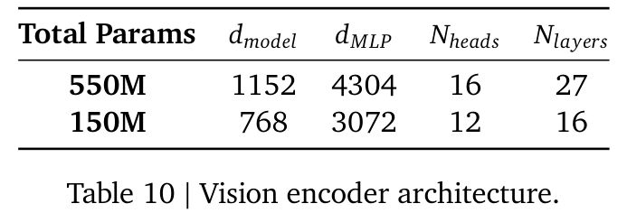
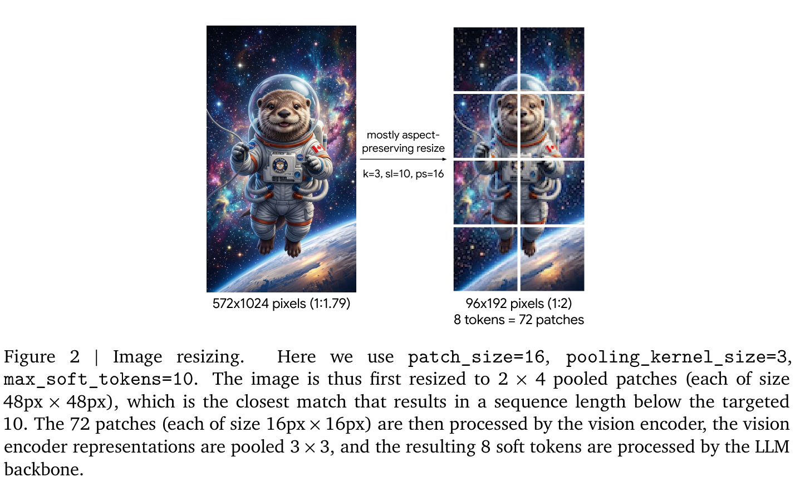
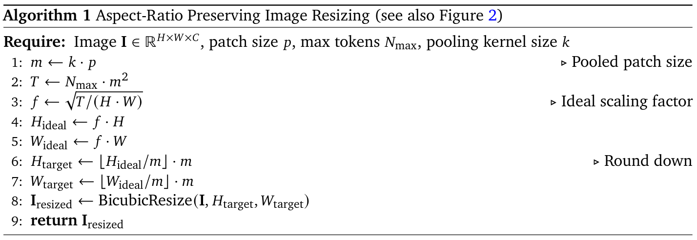
算法 1：保持宽高比的图像缩放（另见图 2）。输入要求：图像 \(I \in \mathbb{R} ^{H\times W\times C}\)、图像块大小 \(p\)、最大 token 数 \(N_{max}\)、池化核大小 \(k\)。首先令池化后的图像块大小 \(m = k\)·\(p\)，再令 \(T = N_{max}\cdot m^{2}\)，计算理想缩放因子 \(f = √(T/(H\cdot W))\)。理想高度和宽度分别为 \(f\)·\(H\) 与 \(f\)·\(W\)；将二者向下取整为 \(m\) 的整数倍，得到目标高度和宽度。使用双三次插值将图像缩放到目标尺寸，返回缩放后的图像。
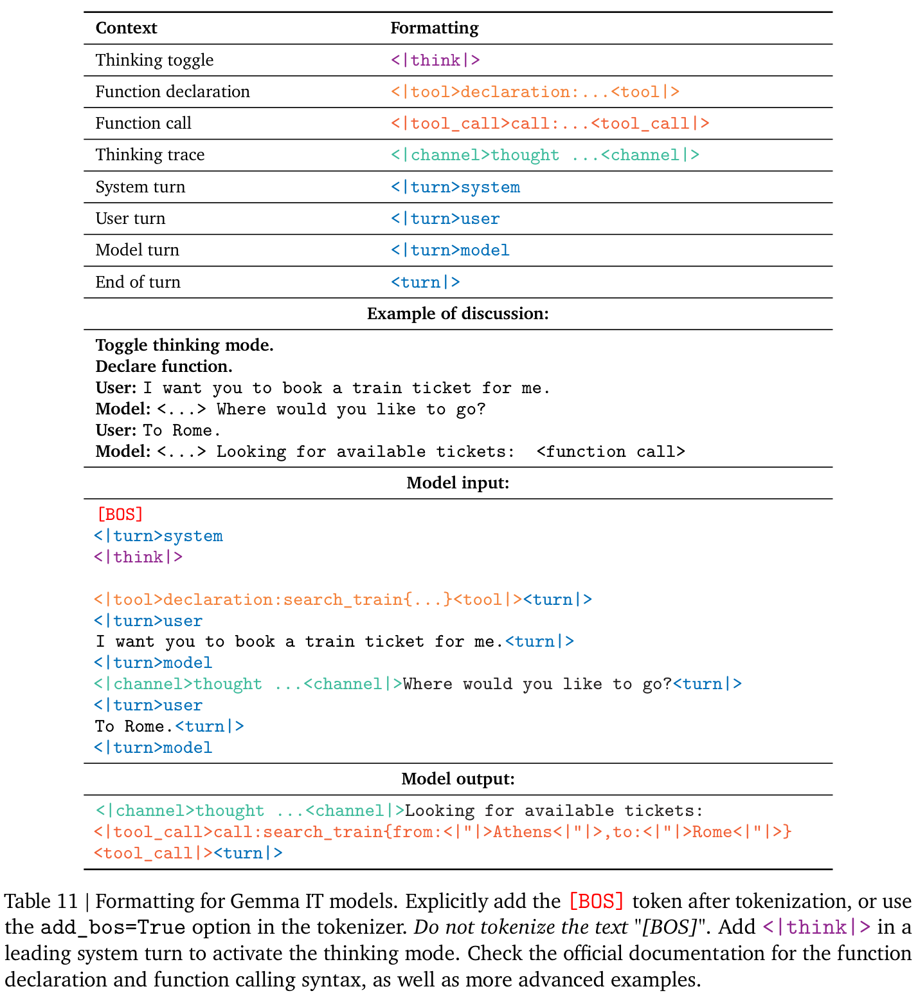
表 11 中的对话示例依次为：启用思考模式；声明函数；用户：“我想让你帮我订一张火车票。”模型：“<…>你想去哪里？”用户：“去 Rome。”模型：“<…>正在查找可用车票：<函数调用>”。模型输入与输出、函数参数及控制 token 按原图保留。
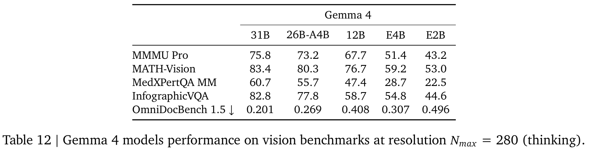